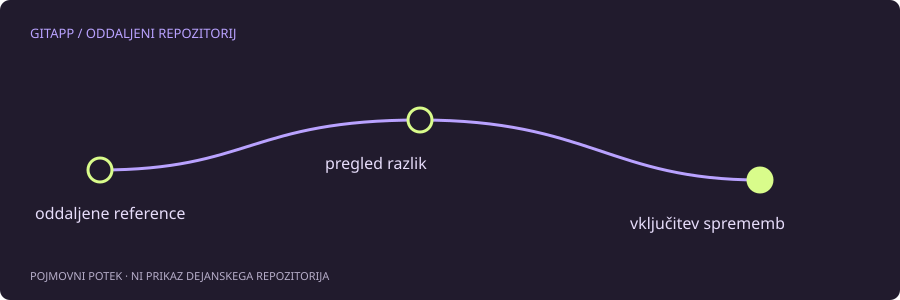

Prenos in vključitev sta različni dejanji
git fetch pridobi podatke iz oddaljenega repozitorija in posodobi ustrezne sledilne reference. Sam po sebi običajno ne vključi prenesenih potrditev v trenutno lokalno vejo. git pull pa združi pridobivanje z vključevanjem, katerega način določajo možnosti in nastavitve.
Ta razlika je uporabna, ko želiš najprej videti, kaj se je zgodilo. Pridobitev podatkov ni enaka odločitvi, da boš z njimi takoj spremenil svojo trenutno zgodovino ali datoteke.
Primer za pregled
Pri oddaljenem repozitoriju z imenom origin lahko začneš tako:
git status
git remote -v
git fetch origin
git log --oneline --graph --decorate --all -n 12Preveri, katera oddaljena veja ustreza tvoji lokalni veji. Imena ne sklepaj iz navade. Nastavljena sledilna povezava lahko kaže na drugo vejo, v novih repozitorijih pa morda še sploh ne obstaja.
Kako deluje vključevanje
Če je lokalna veja le zaostala, jo je mogoče v ustreznih razmerah premakniti naprej brez nove združitvene potrditve. Možnost --ff-only tak premik omeji na ta primer in zavrne razvejano zgodovino. Zavrnitev je informacija, da potrebuješ odločitev, ne razlog za obvoz.
Pri razvejanju lahko uporabiš združevanje ali preurejanje. Slednje ponovno uporabi lokalne potrditve na drugi osnovi. Razlika vpliva na identifikatorje in obliko zgodovine, zato izberi pravilo projekta, ne naključnega ukaza iz odgovora na drugo vprašanje.
Ne pozabi na lokalno delo
Nepotrjene spremembe lahko preprečijo vključitev ali se zapletejo s spremembami na drugi strani. git status pred začetkom pove, ali je delovno stanje čisto. Če ni, se odloči, kaj želiš obdržati in kako to zavarovati.
Ni univerzalnega nasveta, da pred vsakim pošiljanjem zaženeš poljubni pull. Če ne poznaš trenutne veje in nastavitev, lahko dobiš rezultat, ki ga nisi pričakoval. Ločen pregled s fetch je pogosto bolj poučen, ker med pridobivanjem in vključevanjem postavi zavestno odločitev.
Kaj vidi sodelavec
Pridobivanje podatkov ne pošlje tvojih lokalnih potrditev na strežnik. Za pošiljanje je namenjen push. Prav tako fetch ne popravi napačnih pravic, naslova ali prijave; pri takih težavah preveri oddaljeni naslov in dovoljenja.
Uspešen postopek se konča s pregledom zgodovine, pričakovano vsebino in preizkusi projekta. Sporočilo, da je prenos uspel, potrjuje prenos, ne pa nujno pravilnosti združenega programa.
Vir in obseg
Referenca: uradni priročnik za git-pull. Primeri so pripravljeni za učenje in niso opis posega v dejanski projekt. Preberi način preverjanja.